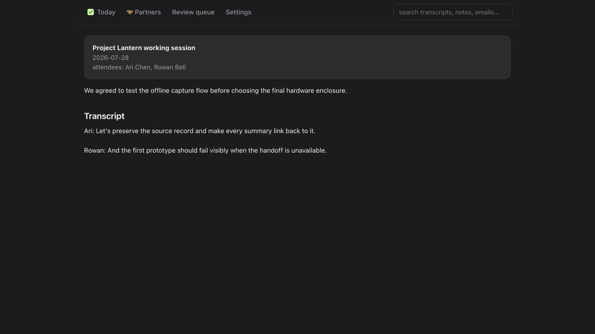

The loss
A meeting disappears twice.
First, the conversation ends. Then the context fragments across a transcript, calendar event, email thread, attachment, and someone’s memory of what was decided. A conventional search box can retrieve strings; it cannot by itself preserve the relationships that make those strings useful.
The product thesis: the durable asset is the corpus of conversations. Search, summaries, dashboards, and agent tools are replaceable views over that asset.
Source of truth
Markdown survives the app.
Every captured meeting becomes a plain-text document with front matter for date, source identity, attendees, and enrichment links. The transcript and notes remain readable without the dashboard, index, model provider, or even the original codebase.
The real meeting vault is intentionally git-ignored. Code can be shared; private conversations cannot.
Derived search
Delete the database. Rebuild it.
SQLite FTS5 makes the corpus fast to search, but it is deliberately not authoritative. If the schema changes, the index can be recreated from the Markdown vault. That asymmetry keeps the durable format simple and the query layer replaceable.
Durable
Markdown meeting records, transcript text, reviewed links, and explicit metadata.
Rebuildable
FTS index, generated dashboards, review views, summaries, timelines, and agent-facing projections.
Provenance
A useful insight can show its work.
Actions, decisions, partner updates, and open loops are more valuable when each one carries a source reference, supporting quote, and confidence. Generation does not erase uncertainty; it organizes it for review.
Design rule: if a claim cannot point back to a note, transcript, email, or attachment, it does not get promoted into memory as fact.
Interfaces
One corpus. Several ways in.
A local CLI handles capture and maintenance. A server-rendered web dashboard supports browsing and review. An MCP server gives an agent narrowly defined retrieval tools. Each interface reads the same local source rather than creating a new silo.

Credentialed steps fail loudly. Missing access should stop enrichment, not fabricate a reassuring empty result.
The lesson
Memory is a data model, not a summary.
A summary is useful for a moment. A durable memory system must preserve raw evidence, separate source from derivation, survive tool changes, and let a future reader audit why a claim exists.
What I would teach: before adding an AI layer, choose the record you are willing to keep for ten years—and make everything intelligent rebuildable from it.